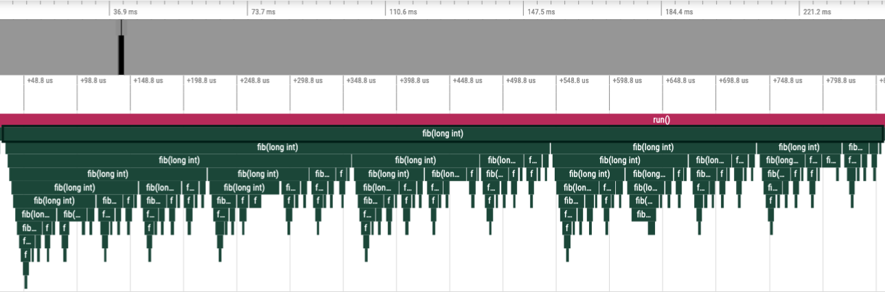
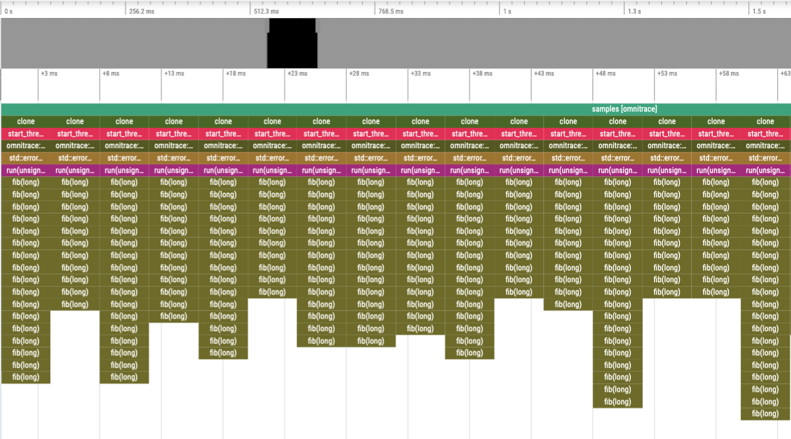

Getting Started¶
Nomenclature¶
The list provided below is intended to (A) provide a basic glossary for those who are not familiar with binary instrumentation, etc. and (B) provide clarification to ambiguities when certain terms have different contextual meanings, e.g., omnitrace’s meaning of the term “module” when instrumenting Python.
Binary
File written in the Executable and Linkable Format (ELF)
Standard file format for executable files, shared libraries, etc.
Binary Instrumentation
Inserting callbacks to instrumentation into an existing binary. This can be performed statically or dynamically
Static Binary Instrumentation
Loads an existing binary, determines instrumentation points, and generates a new binary with instrumentation directly embedded
Applicable to executables and libraries but limited to only the functions defined in the binary
Also known as: Binary Rewrite
Dynamic Binary Instrumentation
Loads an existing binary into memory, inserts instrumentation, executes binary
Limited to executables but capable of instrumenting linked libraries
Also known as: Runtime Instrumentation
Statistical Sampling
Also known as (simply) “sampling”
At periodic intervals, the application is paused and the current call-stack of the CPU is recorded alongside with various other metrics
Uses timers that measure either (A) real clock time or (B) the CPU time used by the current thread and the CPU time expended on behalf of the thread by the system
Sampling Rate
The period at which (A) or (B) are triggered (in units of
# interrupts / second)Higher values increase the number of samples
Sampling Delay
How long to wait before (A) and (B) begin triggering at their designated rate
Sampling Duration
The time (in realtime) after the start of the application to record samples. Once this time limit has been reached, no more samples will be recorded.
Process Sampling
At periodic (realtime) intervals, a background thread records global metrics without interrupting the current process. These metrics include, but are not limited to: CPU frequency, CPU memory high-water mark (i.e. peak memory usage), GPU Temperature, GPU Power usage, etc.
Sampling Rate
The realtime period for recording metrics (in units of
# measurements / second)Higher values increase the number of samples
Sampling Delay
How long to wait (in realtime) before recording samples
Sampling Duration
The time (in realtime) after the start of the application to record samples. Once this time limit has been reached, no more samples will be recorded.
Module
With respect to binary instrumentation, a module is defined as either the filename (e.g.
foo.c) or library name (libfoo.so) which contains the definition of one or more functionsWith respect to Python instrumentation, a module is defined as the file which contains the definition of one or more functions.
The full path to this file typically contains the name of the “Python module”
Basic Block
Straight-line code sequence with:
No branches in (except for the entry)
No branches out (except for the exit)
Address Range
The instructions for a function in a binary start at certain address with the ELF file and end at a certain address, the range is
end - startThe address range is a decent approximation for the “cost” of a function, i.e., a larger address range approx. equates to more instructions
Instrumentation Traps
On the x86 architecture, because instructions are of variable size, the instruction at a point may be too small for Dyninst to replace it with the normal code sequence used to call instrumentation
Also, when instrumentation is placed at points other than subroutine entry, exit, or call points, traps may be used to ensure the instrumentation fits
By default, omnitrace avoids instrumentation which requires using a trap
Overlapping functions
Due to language constructs or compiler optimizations, it may be possible for multiple functions to overlap (that is, share part of the same function body) or for a single function to have multiple entry points
In practice, it is impossible to determine the difference between multiple overlapping functions and a single function with multiple entry points
By default, omnitrace avoids instrumenting overlapping functions
General Tips¶
Use
omnitrace-availto lookup configuration settings, hardware counters, and data collection componentsUse
-dflag for descriptions
Generate a default configuration with
omnitrace-avail -G ${HOME}/.omnitrace.cfgand tweak accordingly to the desired default behaviorDecide whether binary instrumentation, statistical sampling, or both will provide the desired performance data (for non-Python applications)
Compile code with optimization enabled (e.g.
-O2or higher), disable asserts (i.e.-DNDEBUG), and include debug info (i.e.-g1at a minimum)NOTE: compiling with debug info does not slow down the code, it only increases compile time and the size of the binary
In CMake, this is generally as easy as settings
CMAKE_BUILD_TYPE=RelWithDebInfoorCMAKE_BUILD_TYPE=ReleaseandCMAKE_<LANG>_FLAGS=-g1
Use binary instrumentation for characterizing the performance of every invocation of specific functions
Use statistical sampling to characterize the performance of the entire application while minimizing overhead
Enable statistical sampling after binary instrumentation to help “fill in the gaps” between instrumented regions
Use the user API to create custom regions, enable/disable omnitrace to specific processes, threads, and/or regions
Dynamic symbol interception, callback APIs, and the user API are always available with binary instrumentation and sampling
Dynamic symbol interception and callback APIs are (generally) controlled through
OMNITRACE_USE_<API>options, e.g.OMNITRACE_USE_KOKKOSP,OMNITRACE_USE_OMPTenable Kokkos-Tools and OpenMP-Tools callbacks, respectively
When generically seeking regions for performance improvement:
Start off collecting a flat profile
Look for functions with high call counts, large cumulative runtimes/values, and/or large standard deviations
When call-counts are high, improving the performance of this function or “inlining” the function can be quick and easy performance improvements
When the standard-deviation is high, collect a hierarchical profile and see if the high variation can be attributable to the calling context. In this scenario, consider creating a specialized version for the function for the longer running contexts
Collect a hierarchical profile and, keeping the flat-profiling data in mind, verify the functions noted in the flat profile are part of the “critical path” of your application
E.g. function(s) with high call counts, etc. which are part of a “setup” or “post-processing” phase which does not consume much time relative to the overall time is, generally, a lower priority for optimization
Use the information from the profiles when analyzing detailed traces
When using binary instrumentation in the “trace” mode, the binary rewrites are preferable to runtime instrumentation.
Binary rewrites only instrument the functions defined in the target binary, whereas runtime instrumentation can/will instrument functions defined in the shared libraries which are linked into the target binary
When using binary instrumentation with MPI, avoid runtime instrumentation
Runtime instrumentation requires a fork + ptrace: which is generally incompatible with how MPI applications spawn their processes
Binary rewrite the executable using MPI (and, optionally, libraries used by the executable) and execute the generated instrumented executable instead of the original, e.g.
mpirun -n 2 ./myexeshould bempirun -n 2 ./myexe.instwheremyexe.instis the generated instrumentedmyexeexecutable.
Data Collection Mode(s)¶
Omnitrace supports several modes of recording trace and profiling data for your application:
| Mode | Descriptions |
|---|---|
| Binary Instrumentation | Locates functions (and loops, if desired) in binary and inserts snippets at the entry and exit |
| Statistical Sampling | Periodically pauses application at specified intervals and records various metrics for the given call-stack |
| Callback APIs | Parallelism frameworks such as ROCm, OpenMP, and Kokkos will make callbacks into omnitrace to provide information about the work the API is performing |
| Dynamic Symbol Interception | Wrap function symbols defined in position independent dynamic library/executable, e.g. pthread_mutex_lock in libpthread.so or MPI_Init in the MPI library |
| User API | User-defined regions and controls for omnitrace |
The two most generic, important modes are binary instrumentation and statistical sampling. It is important to understand the advantages and disadvantages.
Binary instrumentation and statistical sampling can be performed with the omnitrace executable but for statistical sampling, it is highly recommended to use the
omnitrace-sample executable instead if no binary instrumentation is required/desired. With either tool, the callback APIs and dynamic symbol interception can be
utilized.
Binary Instrumentation¶
Binary instrumentation will allow one to deterministically record measurements for every single invocation of a given function. Binary instrumentation effectively adds instructions to the target application to collect the required information and, thus, has the potential to cause performance changes which may, in some cases, lead to inaccurate results. The effect depends on what information being collected and which features are activated in omnitrace. For example, collecting only the wall-clock timing data will have less effect than collected the wall-clock timing, cpu-clock timing, memory usage, cache-misses, and number of instructions executed. Similarly, collecting a flat profile will have less overhead than a hierarchical profile and collecting a trace OR a profile will have less overhead than collecting a trace AND a profile.
In omnitrace, the primary heuristic for controlling the overhead with binary instrumentation is the minimum number of instructions for selecting functions for instrumentation.
Statistical Sampling¶
Statistical call-stack sampling periodically interrupts the application at regular intervals using operating system interrupts. Sampling is typically less numerically accurate and specific, but allows the target program to run at near full speed. In constrast to the data derived from binary instrumentation, the resulting data is not exact but, instead, a statistical approximation. However, sampling often provides a more accurate picture of the application execution because it is less intrusive to the target application and has fewer side effects on memory caches or instruction decoding pipelines. Furthermore, since sampling does not affect the execution speed as significantly, is it relatively immune to over-evaluating the cost of small, frequently called functions or “tight” loops.
In omnitrace, the overhead for statistical sampling is a factor of the sampling rate and whether the samples are taken with respect to the CPU time and/or real time.
Binary Instrumentation vs. Statistical Sampling Example¶
Consider for the following code:
long fib(long n)
{
if(n < 2) return n;
return fib(n - 1) + fib(n - 2);
}
void run(long n)
{
long result = fib(nfib);
printf("[%li] fibonacci(%li) = %li\n", i, nfib, result);
}
int main(int argc, char** argv)
{
long nfib = 30;
long nitr = 10;
if(argc > 1) nfib = atol(argv[1]);
if(argc > 2) nitr = atol(argv[2]);
for(long i = 0; i < nitr; ++i)
run(nfib);
return 0;
}
Binary instrumentation of the fib function will record every single invocation of the function – which for a very small function
such as fib, will result in significant overhead since this simple function tends to be less than 20 or so instructions, whereas the entry and
exit snippets are ~1024 instructions. Thus, we generally want to avoid instrumenting functions where the instrumented function has significantly fewer
instructions than entry + exit instrumentation (please note, however, that many of the instructions entry/exit functions are either logging functions or
depend on the runtime settins and thus may never be executed). However, due to the number of potentially executed instructions in the entry/exit snippets,
the default behavior of omnitrace is to only instrument functions which contain fewer than 1024 instructions.
However, recording every single invocation of the function can be extremely useful for detecting anomalies: profiles will show min/max values much smaller/larger
than the average and/or high standard deviation and traces will allow you to identify exactly when and where those instances deviated from the norm.
Consider the level of details in the following traces where, in the top image, every instance of the fib function was instrumented vs. the bottom image
where the fib call-stack was derived via sampling:
Binary Instrumentation of Fibonacci Function¶

Statistical Sampling of Fibonacci Function¶
